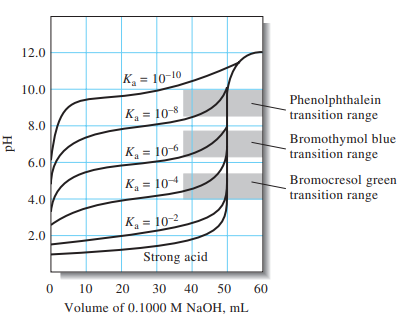

일상생활과 산업에서의 응용
제산제
위산 과다로 인한 속쓰림을 완화하기 위해 염기성 물질(수산화알루미늄, 탄산수소나트륨 등)을 사용하여 위산을 중화합니다.
토양 개량
산성화된 토양에 석회(CaO)나 소석회(Ca(OH)₂)를 첨가하여 토양의 pH를 중화시켜 작물 생장에 적합한 환경을 만듭니다.
폐수 처리
산업 폐수의 pH를 조절하기 위해 산이나 염기를 첨가하여 중화시킨 후 방류합니다. 이는 수질 오염을 방지하는 중요한 과정입니다.
산성비 대응
산성비로 인한 호수나 강의 산성화를 막기 위해 석회를 뿌려 중화시키는 방법이 사용됩니다.
